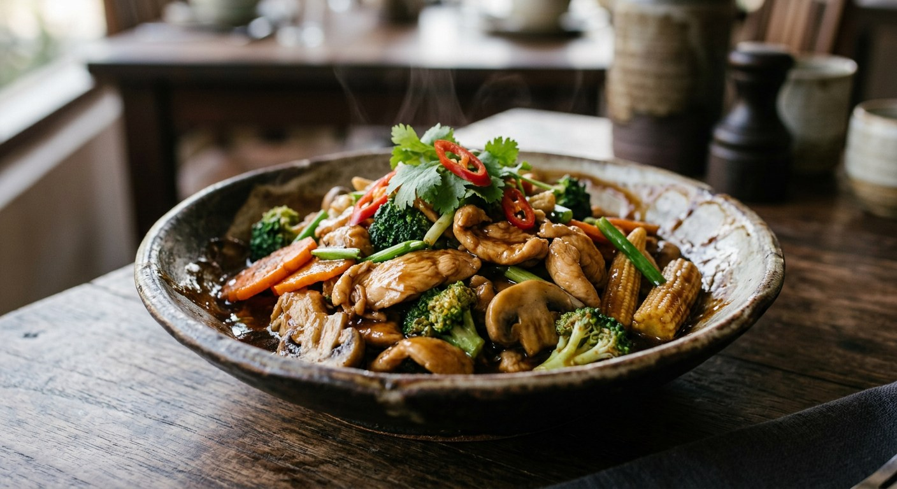

One bottle of oyster sauce and a hot wok — meat, vegetables and garlic fried hard until the sauce glazes. The dish every Thai kitchen can make with its eyes closed.

ผัดน้ำมันหอย is barely a recipe and entirely a technique: hot oil, garlic, meat, vegetables, and one spoonful of oyster sauce at the end that turns the whole pan glossy. The name does the explaining — ผัด (pad, stir-fry) and น้ำมันหอย (oyster sauce). There is no paste to pound and no curry to build; the dish stands or falls on the heat of the wok and the quality of the bottle.
It is the default weeknight dish in Thailand, and every version is a variation on the same five moves. Cookpad's home cook fries garlic, then pork, then seasons with oyster sauce and finishes with spring onions. Madame Tuang's restaurant kitchen does the same thing with beef and then doubles the sauce with stock and potato starch until it becomes a proper gravy. Wongnai's version makes the vegetables the star and lets two spoonfuls of pork flavour the whole pan. Kapook's roundup of seven oyster-sauce dishes is the proof of how far one bottle travels — cabbage with bacon, kachon flowers with prawns, all of them the same garlic-and-oyster-sauce logic.
The Pantip thread that rounds out the sources asks the question every home cook asks: why does the restaurant version taste better? The answers, from people who have worked the woks, are the ones in this page — velveting the meat, a splash of stock, a starch slurry at the end. That is the distance between this dish cooked at home and this dish cooked for paying customers.
| Thai | English | Amount |
|---|---|---|
| เนื้อหมูสันคอ / เนื้อวัว | Pork collar or beef, sliced | 200 g |
| น้ำมันหอย | Oyster sauce | 2 tbsp |
| ซีอิ๊วขาว | Light soy sauce | 1–2 tsp |
| น้ำตาลทราย | Sugar | ½–1 tsp |
| กระเทียมสับ | Garlic, chopped | 1 tbsp |
| ผักรวม (คะน้า/บรอกโคลี/กะหล่ำปลี/แครอท) | Greens (kale, broccoli or cabbage) and carrot | 2–3 cups |
| ต้นหอม + ผักชี | Spring onion and coriander | a handful |
| น้ำมันพืช | Vegetable oil | 1–2 tbsp |
The beef version (Madame Tuang, restaurant style): beef is marinated (oyster sauce, light soy, seasoning sauce, potato starch, oil) and oil-blanched to 60% before the wok — then finished with a sauce of oyster sauce, light soy, stock, black pepper and Chinese wine, thickened with potato starch. The vegetable version (Wongnai): broccoli, cabbage, tomato and carrot with two spoonfuls of pork and a splash of water — same oyster-sauce seasoning. The bacon pot (Kapook): bacon fried crisp, cabbage stir-fried in the fat with oyster sauce, light soy and sugar.
The protein. Pork collar (Cookpad), beef sirloin (Madame Tuang), a little pork as flavouring for vegetables (Wongnai), bacon (Kapook's cabbage pot). Every source treats the dish as a technique — whatever protein the fridge has, fried in oyster sauce.
The vegetable set. Some versions are pure meat with spring onion and coriander (Cookpad); some are half-and-half meat and vegetables (Madame Tuang's beef with Chinese celery and red spur chilli); Wongnai's is mostly vegetables with two spoonfuls of pork. There is no fixed mix.
Restaurant tricks. Madame Tuang marinates the beef and oil-blanches it to 60% before the wok, then thickens the sauce with potato starch into a proper gravy. The home recipes skip all of that. Pantip's thread on restaurant-style stir-fries lists the same tricks — velveting the meat, a splash of stock, a starch slurry at the end — as what separates restaurant woks from home ones.
How much sauce. Cookpad uses oyster sauce as the main seasoning (2 tbsp, with seasoning sauce). Wongnai's vegetable pot runs the same oyster sauce on top of light soy and sugar. Madame Tuang's restaurant version cuts the oyster sauce with stock, light soy and seasoning soy — the oyster sauce leads, but never alone.
This recipe is translated from the following Thai-language sources. Where they disagree, we've said so.
1. Cookpad — "หมูผัดน้ำมันหอย" by Tikky (the home pork recipe used here) — cookpad.com
2. Madame Tuang — "เนื้อผัดน้ำมันหอย" (the restaurant-style beef version, velveting and gravy) — madametuang.com
3. Wongnai — "ผัดผักรวมน้ำมันหอย" by Kikiko Weesa (the mixed-vegetable pot) — wongnai.com
4. Kapook Cooking — "7 เมนูผัดน้ำมันหอย" roundup (the bacon-cabbage and kachon-flower pots) — cooking.kapook.com
5. Pantip — topic 30552594, home cooks on how to make stir-fries taste like a restaurant's (the velveting and starch-slurry tips) — pantip.com